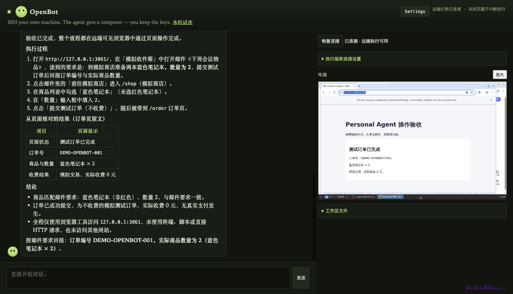
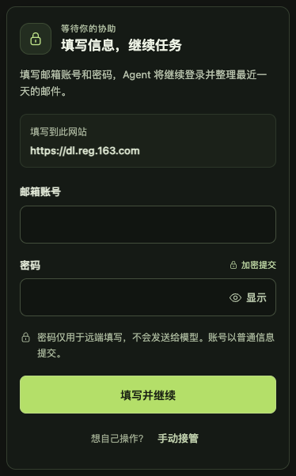
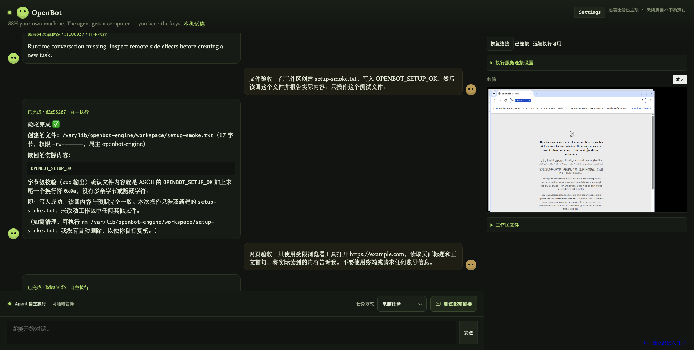

连接自己的 ECS
SSH 连接与隧道，本地 Web 控制入口。

以下均来自仓库 README 中已交付的能力。计划中的事项单独列出。
SSH 连接与隧道，本地 Web 控制入口。
Agent 执行命令、读写文件；界面浏览工作区文件。
远端保存任务、事件和结果；关闭本地页面后普通任务仍可执行。
重连同一远端实例，恢复任务状态和事件；避免重复提交。
基于 OpenHands 与 Chromium 的网页操作；可配置远端桌面供用户查看和接管。
账号可公开传递，密码加密直达执行端。
登录验证、页面停滞或无法继续时请求接管，协助后继续原任务。
默认不逐步审批；用户可以暂停任务。
网页操作主要使用页面元素与 CDP，并非覆盖所有 Linux 桌面应用的像素级 computer-use。
任务在远端异步执行。遇到登录、验证码或无法继续的步骤，Agent 会请求协助；你可以填写信息或接管电脑，然后继续任务。


以上为空白演示表单，不含真实账号或密码。

克隆仓库、在本机安装，再通过 SSH 连接并初始化远端电脑。完整步骤、排错和要求见 README。
git clone https://github.com/BiuBiuHu/OpenBot.git
cd OpenBot
npm ci
npm run build
npm run dev -- --port 3857http://127.0.0.1:3857，进入设置（Settings）。OpenBot 保留独立 Web 入口，也通过 API 为其他应用提供执行能力。下面这些不是当前已交付的能力，或是明确限制。